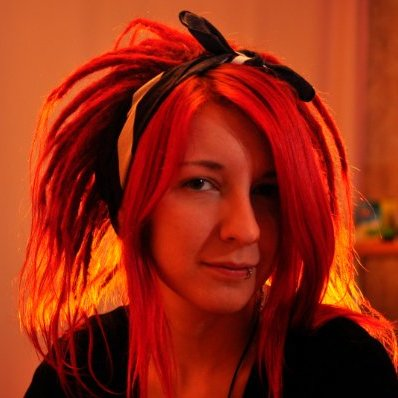

Alice Levkovich
06.12.1993 (23 years)
+375 25 963-08-11
alice.levkovich@gmail.com

Education
2011 - 2016
BSU, Faculty of sociocultural communications
Informatics (web-programming and web-design) - Specialist in computer graphics and web-applications delopment
Professional skills
-
Frontend: HTML, CSS, JavaScript, SASS, Bootstrap, GreenSock, jQuery
-
Backend: PHP, Yii2 PHP
-
DB: MySQL
-
VCS: Git
-
Graphics: Adobe Photoshop, Adobe Illustrator
-
Tools: Composer, NPM, Bower
-
Other: web-design, UI/UX design
Experience
September 2015 - nowadays
Front-end developer in digital marketing agency “Ashwood Creative”
-
Getting involved in the development of all iternal products and projects using a variety of technologies,
-
Providing improvement and technical support for our companie's website (ashwood.by) based on Yii framework as well as technical support for our client's websites based on WordPress, Joomla and some custom CMSs (mazda.by, landrover-atlantm.by, jaguar-atlantm.by, ladygadiva.by/).
-
Creating modern and responsive landing pages with different animation effects and promo materials
-
Creating animated html advertisment: interactive fullscreen banners placed on major news portals ( like tut.by, onliner.by, abw.by and some other) using Adriver system as well as standart animated banners placed on Google Display Network AdWords, Yandex RTB and other advertisement platforms.
-
Coding html emails compatible with most of popular email-clients (Gmail, Outlook, Mobile Gmail, Mail.ru) and sending then using Mailchimp service.
-
Recruiting, interviewing, task planning, allocation of tasks by competence and aptitude, monitoring of implementation and providing assistance in implementation.
-
Writing technical assignments for the projects.
-
Task tracker (Redmine) configuration and administration.
May 2013 - March 2017
Freelance
- Small websites
- Creating landing pages
- Creating HTML templates for integration to Bitrix CMS, styling default Bitrix plugins.
- Coding html emails compatible with most of popular email-clients (Gmail, Outlook, Mobile Gmail, Mail.ru)
- Creating animated html banners placed on Google Display Network AdWords, Yandex RTB and other advertisement platforms.
Projects
2016 - Ashwood Creative
Online profile page for the digital marketing agency “BC Ashwood”.
Tech: Yii2 PHP, GreenSock, JavaScript, jQuery.
2016 - Unibrains
Responsive landing page for central testing courses “Unibrains”.
Tech: Bootstrap, jQuery, SASS
2016 - Wonderlandiya
Responsive template for online-shop based on Bitrix CMS, styling Bitrix components
Tech: Bootstrap, jQuery, GreenSock.
2016 - Hollandia
Responsive landing page for Hollandia company.
Tech: Bootstrap.
2015 -
BuyClicks
Online shop for commercial clicks integrated with payment system.
Tech: Yii2 PHP, Bootstrap, JavaScript, jQuery, MySQL, Paysera payment system.
Personality
Interests: UI/UX design, interfaces, web-animations
Hobbies: flow arts, fireshow, travelling, snowboarding